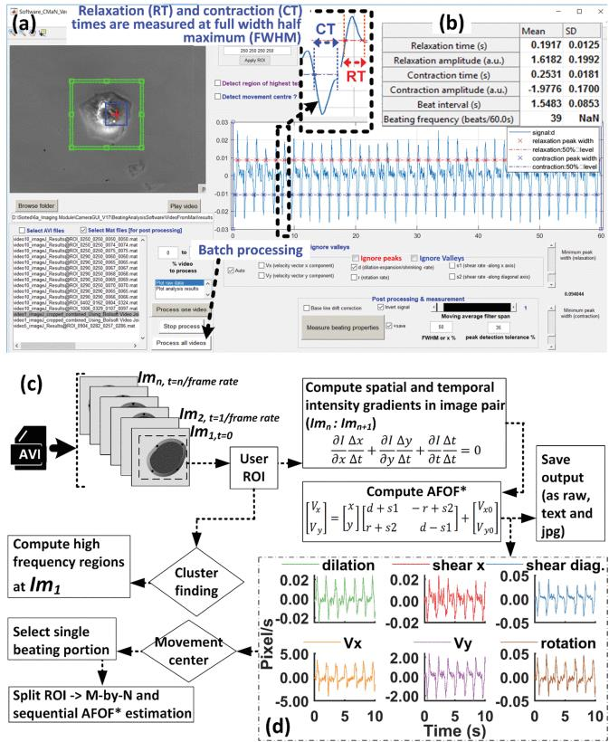
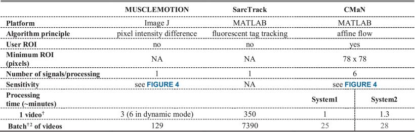
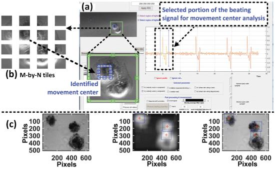
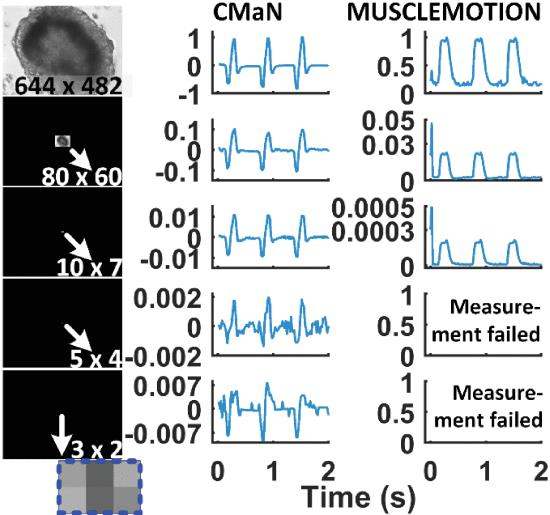

Optics and Biomedical engineering
Software development
Publications
Novel video-based movement analysis software-CMaN


CMaN Performance Comparison Against MUSCLEMOTION and SarcTrack Using Two Computers (System 1: 2.6-GHz Processor and 32 GB of RAM, System 2: 2.7-GHz Processor and 8 GB of RAM). †30 -s Long avi (60 fps, 640×512 Pixels, 32-bit RGB, 1.64-GB Size on an SSD Hard Drive). †220 avi Files (33-GB Size on an External SSD Drive)
CMaN (Cardiomyocyte function analysis tool). (a) Screenshot from the software user interface. In the upper left corner, the blue rectangle shows the movement center of a single-cell CM, whereas the green rectangle shows the user-selected ROI. (b) Table of the estimated mechanobiology parameters. (c) A schematic overview of the algorithm flow and the principle behind the *AFOF (affine optical flow) computation from image pairs. (d) Six signal components of the contractile motion extracted from a single cell beating video.

Movement center detection and cluster finding. (a, b) The signal portion of a contractionrelaxation region of a single cell selected for movement center analysis. The frames from this portion were spatially split into M-by-N tiles for sequential affine flow processing. The detected movement center is marked with a blue dashed rectangle. (c) Three images (first frame, smoothed, and with identified clusters) from the cluster-finding feature. The blue rectangles show the identified clusters in the entire frame. See also Supplementary Material 5.

CMaN analysis sensitivity. Column 1: Screenshots of five videos. The original video (1st one) was spatially downsized 1/8, 1/64, 1/128, and 1/256 times to produce subsequent videos with a reduced movement area. Columns 2 & 3: Normalized signals (referenced to original signal, ROI: full frame, which also includes the black area in the downsized videos) analyzed with CMaN and MUSCLEMOTION. CMaN displayed better sensitivity.